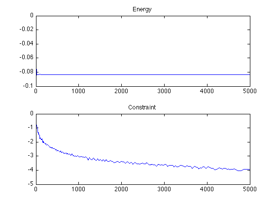

Constrained Total Variation Projection with ADDM
Test for ADMM algorithm convergence on a randomized example.
addpath('../'); addpath('../toolbox/');
We want to solve a problem of the form
|min_{x in C, norm(K*x,1)<=1} -<x,w> + epsilon/2*norm(x)^2Here K is some sort of "gradient" operator (here we use a random matrix) and C
This can be written as
|min_x F(K*x) + G(x)|
where F(u) = i_{norm(u,1)<=1} and G(x) = i_{C}(x) - f,w + epsilon/2*norm(f)^2.
Inner product shortcut.
dotp = @(u,v)sum(u(:).*v(:));
Dimension of the problem.
n = 300;
Number of computed "gradient".
p = 500;
Number of affine constraint
r = 10;
Regularization.
epsilon = .1;
Gradient operator.
K = randn(p,n);
Linear function to optimize.
w = randn(n,1);
Constraint operator.
A = randn(r,n); y = randn(r,1)*0;
Projector on A*f=y.
pA = A'*(A*A')^(-1); ProjC = @(f)f + pA*(y-A*f);
Projection on L1 ball.
ProxF = @(u,rho)perform_l1ball_projection(u,1); ProxFS = compute_dual_prox(ProxF);
Proximal operator of G.
ProxG = @(x,tau)ProjC( (x+tau*w)/(1+tau*epsilon) );
Callback to record information during the iterations.
F = @(x)-dotp(x,w) + epsilon/2*norm(x(:))^2; Constr = @(x)norm(K*x,1); options.report = @(x)struct('F', F(x), 'Constr', Constr(x));
Run the algorihtm.
options.niter = 5000; [f,R] = perform_admm(zeros(n,1), K, K', ProxFS, ProxG, options);
[********************]
Retrieve the F and constraint function values.
f = s2v(R,'F'); constr = s2v(R,'Constr');
Display.
clf; subplot(2,1,1); plot(f); title('Energy'); subplot(2,1,2); plot(log10(abs(constr-1))); title('Constraint');